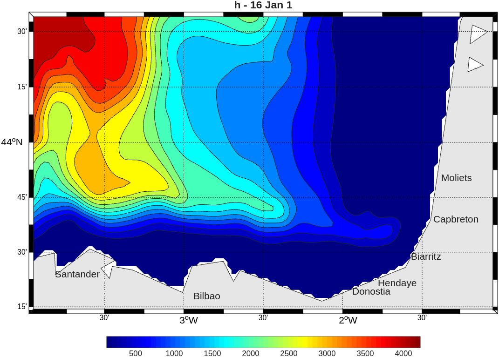
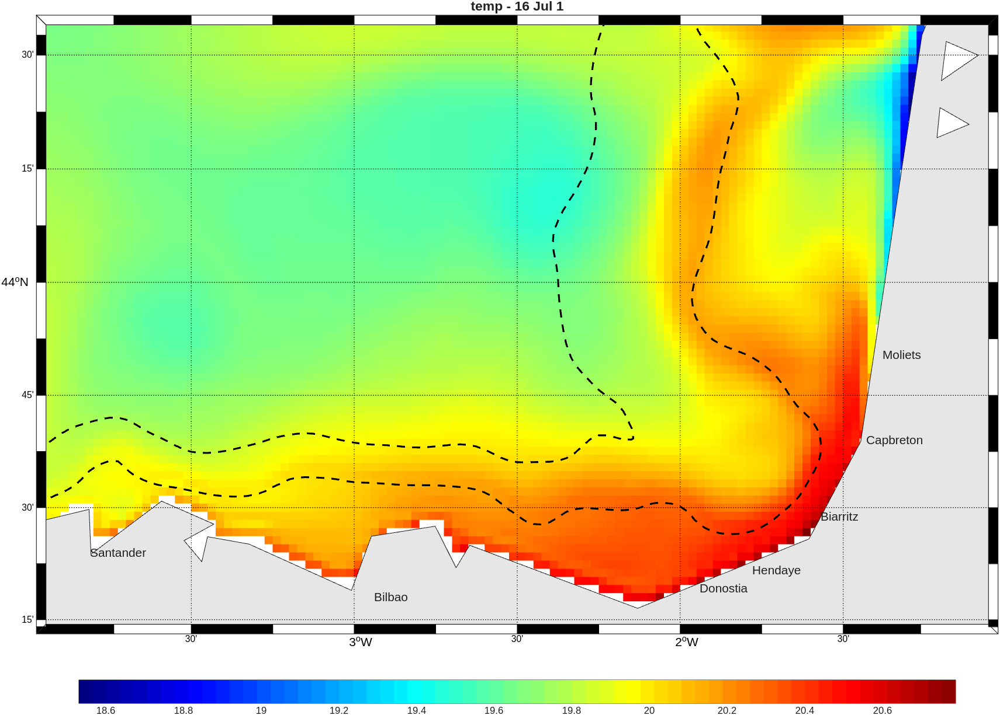

 Batimetría del modelo (1/40°) | Proyecto de modelización del sur del golfo de VizcayaAsignatura OPB205 – Modelización oceánica 3D |  SST simulada en verano |


| Formación | Máster en Ciencias del Mar — Oceanografía Física y Biogeoquímica |
|---|---|
| Descripción | Este proyecto, realizado en el marco de la asignatura OPB205 (Modelización oceánica 3D) del Máster en Ciencias del Mar de la Universidad de Aix-Marsella (OSU Pythéas, MIO), tiene ante todo un objetivo pedagógico: dominar toda la cadena de una simulación, desde el preprocesado hasta la configuración de un modelo hidrodinámico regional (definición de la malla espacial make_grid, gestión de las fronteras abiertas make_clim o de las condiciones iniciales make_ini). Con el modelo numérico CROCO (Coastal and Regional Ocean COmmunity model), configurado a alta resolución (1/40°, es decir, dx = 2 km), este trabajo explora la dinámica estacional y las estructuras de mesoescala en el sur del golfo de Vizcaya, una zona muy interesante por la incisión topográfica del cañón de Capbreton y por la geometría que forman las plataformas cantábrica y de las Landas. El estudio consistió primero en contrastar las simulaciones con los artículos científicos de referencia recopilados durante la síntesis bibliográfica, para comprobar si el modelo reproducía estructuras físicas coherentes con las observaciones históricas. El proyecto se articula así en torno a tres grandes ejes de validación:
|
| Documentos | Informe (PDF, 5,7 MB) · Presentación (PDF, 3,2 MB) |
| Galería | Cada enlace abre la imagen a tamaño completo (hasta 738 kB).
|


Última actualización: 01/05/2026